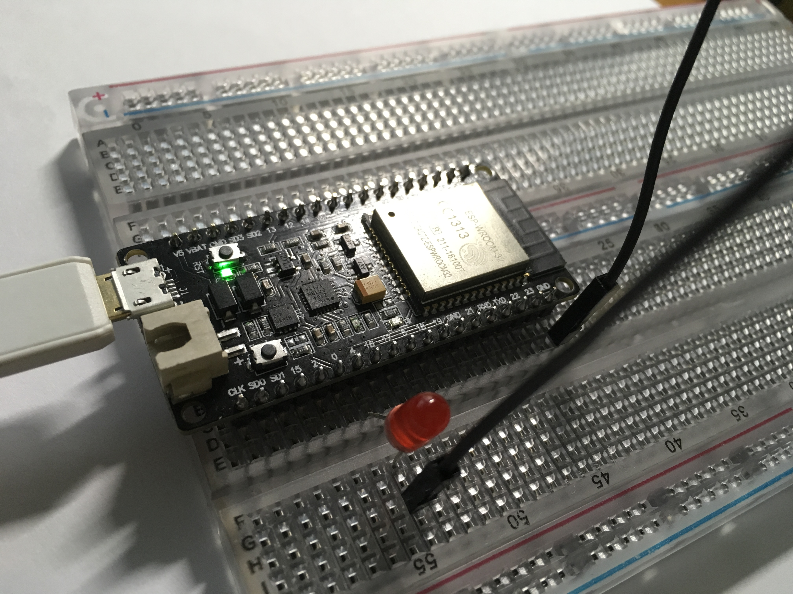
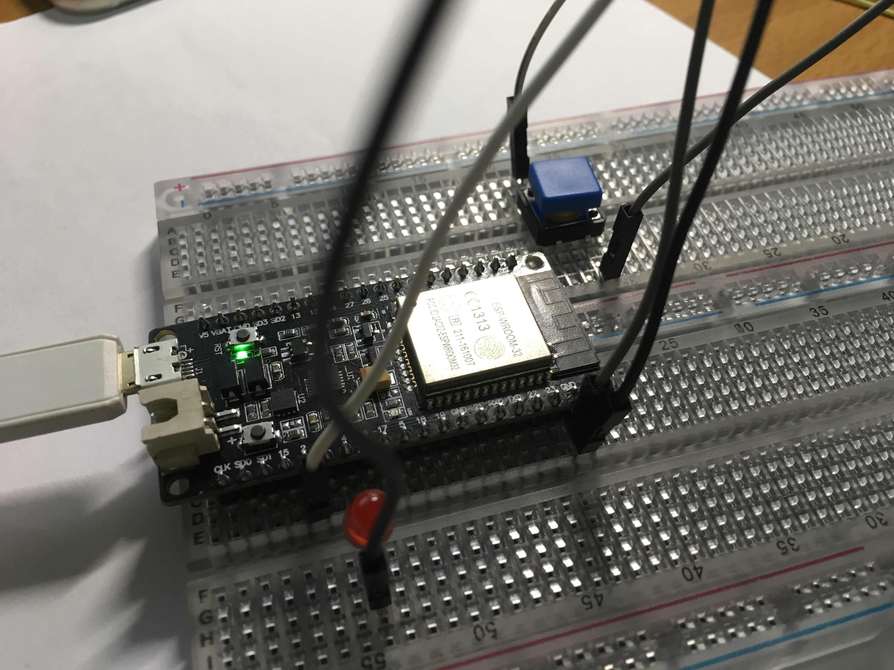

GPIO
In this example, we use several LEDs to show how to use GPIO with MicroPython.
OUTPUT
Wiring

- Connect pin 4 to a LED + pin.
- Connect GND to the LED - pin.
Code
Open the MicroPython REPL in the terminal.
Use the machine.Pin class:
from machine import Pin
p4 = Pin(4, Pin.OUT) # create output pin on GPIO4
p4.value(1) # set pin to "on" (high) level
p4.value(0) # set pin to "off" (low) level
By setting high or low levels, the LED will be on or off.
INPUT
Wiring

- Connect a button to pin 2.
- Connect GND to button.
Code
from machine import Pin
p2 = Pin(2, Pin.IN) # create input pin on GPIO2
print(p2.value()) # get value, 0 or 1
Press or release the button, you'll get different values.
Available pins are: 0, 1, 2, 3, 4, 5, 12, 13, 14, 15, 16, which correspond to the actual GPIO pin numbers of ESP8266 chip.
Combine INPUT&OUTPUT
p2 = Pin(2, Pin.IN, Pin.PULL_UP) # enable internal pull-up resistor
p4 = Pin(4, Pin.OUT, value=1) # set pin high on creation
while True:
if p2.value():
p4.value(1)
else:
p4.value(0)
With this code, when you release the button, the LED is on and off while you pressing it.